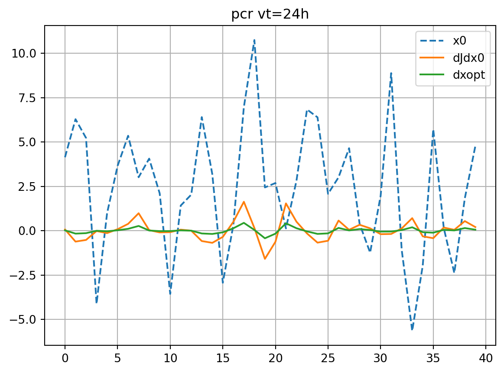
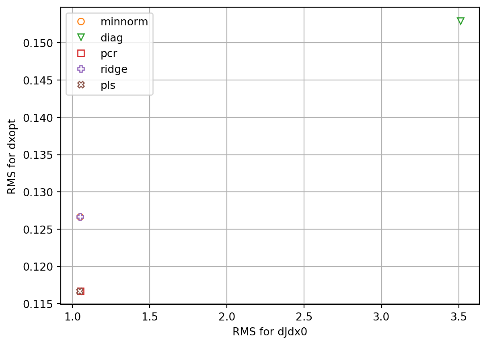
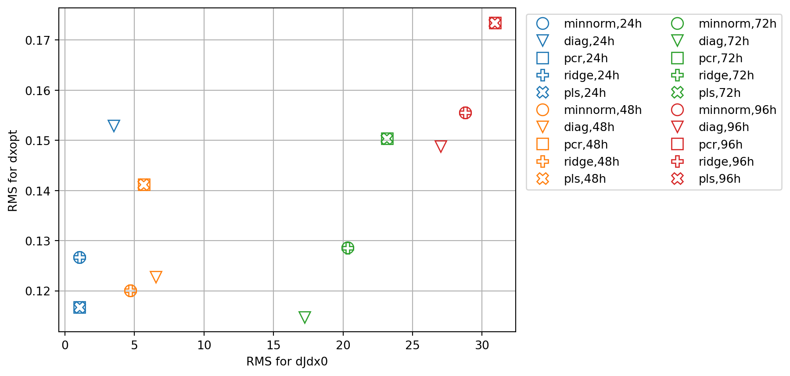
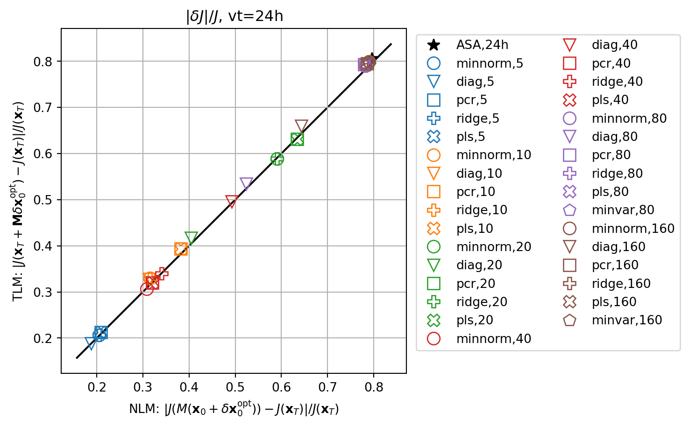
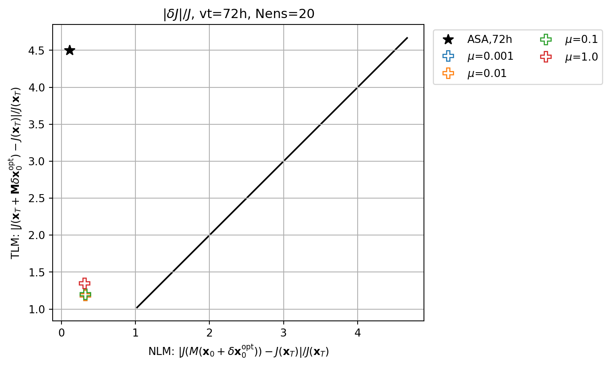

Code
import os
import sys
import numpy as np
import matplotlib.pyplot as plt
from matplotlib.colors import Normalize
from numpy.random import default_rng
import reimport os
import sys
import numpy as np
import matplotlib.pyplot as plt
from matplotlib.colors import Normalize
from numpy.random import default_rng
import re\[ \frac{\mathrm{d}X_n}{\mathrm{d}t} = -X_{n-2}X_{n-1}+X_{n-1}X_{n+1}-X_n+F \tag{1}\]
class L96():
def __init__(self, nx, dt, F):
self.nx = nx
self.dt = dt
self.F = F
#print(f"nx={self.nx} F={self.F} dt={self.dt}")
def get_params(self):
return self.nx, self.dt, self.F
def l96(self, x):
l = np.zeros_like(x)
l = (np.roll(x, -1, axis=0) - np.roll(x, 2, axis=0)) * np.roll(x, 1, axis=0) - x + self.F
return l
def __call__(self, xa):
k1 = self.dt * self.l96(xa)
k2 = self.dt * self.l96(xa+k1/2)
k3 = self.dt * self.l96(xa+k2/2)
k4 = self.dt * self.l96(xa+k3)
return xa + (0.5*k1 + k2 + k3 + 0.5*k4)/3.0
def l96_t(self, x, dx):
l = np.zeros_like(x)
l = (np.roll(x, -1, axis=0) - np.roll(x, 2, axis=0)) * np.roll(dx, 1, axis=0) + \
(np.roll(dx, -1, axis=0) - np.roll(dx, 2, axis=0)) * np.roll(x, 1, axis=0) - dx
return l
def step_t(self, x, dx):
k1 = self.dt * self.l96(x)
dk1 = self.dt * self.l96_t(x, dx)
k2 = self.dt * self.l96(x+k1/2)
dk2 = self.dt * self.l96_t(x+k1/2, dx+dk1/2)
k3 = self.dt * self.l96(x+k2/2)
dk3 = self.dt * self.l96_t(x+k2/2, dx+dk2/2)
k4 = self.dt * self.l96(x+k3)
dk4 = self.dt * self.l96_t(x+k3, dx+dk3)
return dx + (0.5*dk1 + dk2 + dk3 + 0.5*dk4)/3.0
def l96_adj(self, x, dx):
l = np.zeros_like(x)
l = np.roll(x, 2, axis=0) * np.roll(dx, 1, axis=0) + \
(np.roll(x, -2, axis=0) - np.roll(x, 1, axis=0)) * np.roll(dx, -1, axis=0) - \
np.roll(x, -1, axis=0) * np.roll(dx, -2, axis=0) - dx
return l
def step_adj(self, x, dx):
k1 = self.dt * self.l96(x)
x2 = x + 0.5*k1
k2 = self.dt * self.l96(x2)
x3 = x + 0.5*k2
k3 = self.dt * self.l96(x3)
x4 = x + k3
k4 = self.dt * self.l96(x4)
dxa = dx
dk1 = dx / 6
dk2 = dx / 3
dk3 = dx / 3
dk4 = dx / 6
dxa = dxa + self.dt * self.l96_adj(x4, dk4)
dk3 = dk3 + self.dt * self.l96_adj(x4, dk4)
dxa = dxa + self.dt * self.l96_adj(x3, dk3)
dk2 = dk2 + 0.5 * self.dt * self.l96_adj(x3, dk3)
dxa = dxa + self.dt * self.l96_adj(x2, dk2)
dk1 = dk1 + 0.5 * self.dt * self.l96_adj(x2, dk2)
dxa = dxa + self.dt * self.l96_adj(x, dk1)
return dxanx=40
dt=0.05/6.0 # = 1 hour
F=8.0
model = L96(nx,dt,F)# initialize random seed
rng = default_rng(509)
# spinup
x = rng.normal(0.0,size=nx,scale=1.0)
nstep = 500
for i in range(nstep):
x = model(x)
vtmax = 120 # hours
vt = 24 # hours
it = 21 # target point
t = [0]
xb = [x]
for i in range(vtmax):
x = model(x)
t.append(i)
xb.append(x)
plt.plot(xb[0],label='initial')
plt.plot(xb[vt],label='valid')
plt.plot([it],xb[vt][it],marker='o',c='r')
plt.grid()
plt.legend()
plt.show()
mp = plt.pcolormesh(np.arange(nx),t,np.array(xb),\
shading='auto',norm=Normalize(-10,10),cmap='coolwarm')
if vt < vtmax:
plt.hlines([vt],0,nx-1,colors='k',ls='dashed')
plt.colorbar(mp)
plt.show()\[ J(\mathbf{x}_T)=\frac{1}{2}x_T(i_t)^2 \] \[ \frac{\partial J}{\partial \mathbf{x}_T}=\left\{ \begin{matrix} x_T(i_t) & i=i_t\\ 0 & i\ne i_t \end{matrix}\right. \]
def calc_j(x):
return 0.5*x[it]*x[it]
def calc_jac(x):
dJdx = np.zeros_like(x)
dJdx[it] = x[it]
return dJdx\[ \frac{\partial J}{\partial \mathbf{x}_0}=\mathbf{M}^\mathrm{T}\frac{\partial J}{\partial \mathbf{x}_T} \tag{2}\]
Optimal initial perturbation is obtained as (Langland et al. 2002) \[ \delta \mathbf{x}_0^\mathrm{opt}=-\lambda\frac{\partial J}{\partial \mathbf{x}_0} \tag{3}\] \[ \lambda = \frac{J}{(\partial J/\partial \mathbf{x}_0)^\mathrm{T}\partial J/\partial \mathbf{x}_0} \tag{4}\]
def calc_dxopt(dJdx0,vt):
J = calc_j(xb[vt])
#optscale = -1.0 * J / np.dot(dJdx0,dJdx0)
optscale = 1.0 / np.sqrt(np.dot(dJdx0,dJdx0))
#optscale = -1.0 * J / dJdx0[it]/dJdx0[it]
dxopt = optscale*dJdx0
return dxoptdef asa(vt,plot_hov=False):
xT = xb[vt].copy()
x0 = xb[0]
dJdxT = calc_jac(xT)
dJdx0 = dJdxT.copy()
dJdx = [dJdxT]
for i in range(vt):
dJdx0 = model.step_adj(xb[vt-i-2],dJdx0)
dJdx.append(dJdx0)
dxopt = calc_dxopt(dJdx0,vt)
if plot_hov:
mp = plt.pcolormesh(np.arange(nx),t[0:vt+1][::-1],np.array(dJdx),\
shading='auto',norm=Normalize(-5,5),cmap='coolwarm')
plt.colorbar(mp)
plt.show()
return dJdx0, dxoptdef check_djdx(dJdx0,dxopt,vt,title='ASA',plot=True):
xp = xb[0] + dxopt
dxp = dxopt.copy()
for i in range(vt):
# nonlinear evolution
xp = model(xp)
# TLM evolution
dxp = model.step_t(xb[i],dxp)
Jb = calc_j(xb[vt])
res_nl = (calc_j(xp) - Jb)/Jb
res_tl = (calc_j(xb[vt] + dxp) - Jb)/Jb
if plot:
plt.plot(xb[0],ls='dashed',label='x0')
plt.plot(dJdx0,label='dJdx0')
plt.plot(dxopt,label='dxopt')
plt.grid()
plt.legend()
plt.title(f'{title} vt={vt}h')
plt.show()
fig, axs = plt.subplots(ncols=2)
axs[0].plot(xb[vt],ls='dashed',label='base')
axs[0].plot(xp,ls='dashed',label='full model')
axs[1].plot(xp-xb[vt],label='full - base')
axs[1].plot(dxp,label='TLM')
ymin, ymax = axs[1].get_ylim()
ylim = max(-ymin,ymax)
axs[1].set_ylim(-ylim,ylim)
for ax in axs:
ax.vlines([it],0,1,colors='gray',alpha=0.5,transform=ax.get_xaxis_transform(),zorder=0)
ax.grid()
ax.legend()
plt.show()
return res_nl, res_tldJdx0_dict = {}
dxopt_dict = {}
resnl_dict = {}
restl_dict = {}
dJdx0, dxopt = asa(vt, plot_hov=True)
dJdx0_dict['ASA'] = dJdx0
dxopt_dict['ASA'] = dxopt
res_nl, res_tl = check_djdx(dJdx0,dxopt,vt,title='ASA')
resnl_dict['ASA'] = res_nl
restl_dict['ASA'] = res_tl
print(res_nl, res_tl)0.7955143459019981 0.806247511851\[ \mathbf{J}_\mathrm{e}=[J_{\mathrm{e},1}-\overline{J_\mathrm{e}},\cdots,J_{\mathrm{e},K}-\overline{J_\mathrm{e}}]^\mathrm{T} \] \[ \mathbf{X}_0 = [\mathbf{x}_0^1 - \mathbf{x}_0,\cdots,\mathbf{x}_0^K - \mathbf{x}_0] \]
## Ensemble trajectories
def create_ens(nens,plot=False):
xe0 = rng.normal(0.0,size=(nx,nens),scale=1.0)
nstep = 500
for i in range(nstep):
xe0 = model(xe0)
xp = xe0 - xe0.mean(axis=1)[:,None]
diagpf = np.diag(np.dot(xp,xp.T))/(nens-1)
xstd = np.sqrt(diagpf.mean())
xp = xp * 0.5 / xstd # rescaling
xe0 = xp + xb[0][:,None]
if plot:
plt.plot(xe0,ls='dotted',c='gray')
plt.plot(xb[0])
plt.title('initial')
plt.show()
xe = [xe0]
for i in range(vtmax):
xe0 = model(xe0)
xe.append(xe0)
if plot:
plt.plot(xe[vt],ls='dotted',c='gray')
plt.plot(xb[vt])
plt.title('final')
plt.show()
return xe
def generate_prtb(vt,xb,xe):
nens = xe[0].shape[1]
Je = np.zeros(nens)
for k in range(nens):
Je[k] = xe[vt][it,k]**2/2.0
Je = Je - np.mean(Je)
#print(Je)
X0 = xe[0] - xb[0][:,None]
return Je, X0nens = 20
print(f"Nens={nens}")
xe = create_ens(nens, plot=True)
Je, X0 = generate_prtb(vt,xb,xe)Nens=20Statistical linearization of \(\partial J/\partial \mathbf{x}_0\) becomes \[ \mathbf{J}^*_\mathrm{e}=\mathbf{X}_0^{*\mathrm{T}}\boldsymbol{\beta}+\boldsymbol{\varepsilon}, \quad \hat{\boldsymbol{\beta}}=\left(\frac{\partial J_\mathrm{e}}{\partial \mathbf{x}_0}\right)^* \tag{5}\] where \(\mathbf{J}^*_\mathrm{e}\) and \(\mathbf{X}_0^*\) are the standardized ensemble metric vector and perturbation matrix. The ensemble adjoint sensitivity \(\frac{\partial J_\mathrm{e}}{\partial \mathbf{x}_0}\) and the residual error \(\boldsymbol{\varepsilon}\) are evaluated as \[ \frac{\partial J_\mathrm{e}}{\partial \mathbf{x}_0}=\frac{\sigma(\mathbf{J}_\mathrm{e})}{\sigma(\mathbf{X}_0)}\hat{\boldsymbol{\beta}} \] \[ \boldsymbol{\varepsilon}=-\overline{\mathbf{X}_0}^\mathrm{T}\frac{\partial J_\mathrm{e}}{\partial \mathbf{x}_0} \]
from sklearn.preprocessing import StandardScaler
from sklearn.decomposition import PCA
from sklearn.linear_model import LinearRegression
from sklearn.pipeline import make_pipeline
from sklearn.cross_decomposition import PLSRegression
class EnASA():
def __init__(self,vt,X0,Je):
self.vt = vt
self.X = X0.T # (nsample, nstate)
self.y = Je
# standardization
xscaler = StandardScaler()
xscaler.fit(self.X)
self.X0m = xscaler.mean_
self.X0s = xscaler.scale_
self.sX0 = xscaler.transform(self.X).T
#print(f"X0m.shape={self.X0m.shape} X0s.shape={self.X0s.shape} sX0.shape={self.sX0.shape}")
yscaler = StandardScaler()
yscaler.fit(self.y[:,None])
self.Jem = yscaler.mean_[0]
self.Jes = yscaler.scale_[0]
self.sJe = yscaler.transform(self.y[:,None])[:,0]
#print(f"Jem.shape={self.Jem.shape} Jes.shape={self.Jes.shape} sJe.shape={self.sJe.shape}")
def __call__(self,solver='minnorm',n_components=None,mu=0.01):
self.solver = solver
if solver=='minnorm':
dJedx0_s = self.enasa_minnorm()
elif solver=='minvar':
dJedx0_s = self.enasa_minvar()
elif solver=='diag':
dJedx0_s = self.enasa_diag()
elif solver=='psd':
dJedx0_s = self.enasa_psd()
elif solver=='pcr':
dJedx0_s = self.enasa_pcr(n_components=n_components)
elif solver=='ridge':
dJedx0_s = self.enasa_ridge(mu=mu)
elif solver=='pls':
dJedx0_s = self.enasa_pls(n_components=n_components)
#print(f"dJedx0_s.shape={dJedx0_s.shape}")
self.rescaling(dJedx0_s)
self.dxeopt = calc_dxopt(self.dJedx0,vt)
return self.dJedx0, self.dxeopt
def rescaling(self,dJedx0_s):
if self.solver == 'pcr':
self.dJedx0 = dJedx0_s.copy()
self.err = self.reg.intercept_
elif self.solver == 'pls':
self.dJedx0 = dJedx0_s.copy()
self.err = self.pls.intercept_
else:
self.dJedx0 = dJedx0_s * self.Jes / self.X0s
self.err = self.Jem - np.dot(self.X0m,self.dJedx0)
def estimate(self):
if self.solver == 'pls':
Je_est = self.pls.predict(self.X)
elif self.solver == 'pcr':
Je_est = self.pcr.predict(self.X)
else:
Je_est = np.dot(self.X,self.dJedx0) + self.err
return Je_est
def score(self):
if self.solver == 'pls':
return self.pls.score(self.X,self.y)
elif self.solver == 'pcr':
return self.pcr.score(self.X,self.y)
else:
u = np.sum((self.y - self.estimate())**2)
v = np.sum((self.y - self.Jem)**2)
return 1.0 - u/v
def enasa_minnorm(self):
dJedx0_s = np.dot(np.dot(self.sX0,np.linalg.pinv(np.dot(self.sX0.T,self.sX0))),self.sJe)
return dJedx0_s
def enasa_minvar(self):
dJedx0_s = np.dot(np.dot(np.linalg.inv(np.dot(self.sX0,self.sX0.T)),self.sX0),self.sJe)
return dJedx0_s
def enasa_diag(self):
dJedx0_s = np.dot(np.dot(np.eye(self.sX0.shape[0])/np.diag(np.dot(self.sX0,self.sX0.T)),self.sX0),self.sJe)
return dJedx0_s
def enasa_psd(self):
dJedx0_s = np.dot(np.dot(np.linalg.pinv(np.dot(self.sX0,self.sX0.T)),self.sX0),self.sJe)
def enasa_pcr(self,n_components=None):
# n_components: number of PCA modes
self.pcr = make_pipeline(StandardScaler(),PCA(n_components=n_components), LinearRegression())
self.pcr.fit(self.X,self.y)
self.reg = self.pcr.named_steps["linearregression"]
self.pca = self.pcr.named_steps["pca"]
dJedx0_s = self.pca.inverse_transform(self.reg.coef_[None,:])[0,]
return dJedx0_s
def enasa_ridge(self,mu=0.01):
dJedx0_s = np.dot(np.dot(np.linalg.inv(np.dot(self.sX0,self.sX0.T)+mu*np.eye(self.sX0.shape[0])),self.sX0),self.sJe)
return dJedx0_s
def enasa_pls(self,n_components=None):
# n_components: number of PCA modes
if n_components is None:
n_components = min(nx,nens-1)
self.pls = PLSRegression(n_components=n_components)
self.pls.fit(self.X,self.y)
dJedx0_s = self.pls.coef_[0,:]
return dJedx0_senasa = EnASA(vt, X0, Je)
Jeest_dict = {}Enomoto et al. (2015); Hacker and Lei (2015)
\[ \left(\frac{\partial J_\mathrm{e}}{\partial \mathbf{x}_0}\right)_\mathrm{minnorm}=\mathbf{X}_0(\mathbf{X}_0^\mathrm{T}\mathbf{X}_0)^\dagger\mathbf{J}_\mathrm{e} \tag{6}\]
solver='minnorm'
dJedx0, dxeopt=enasa(solver=solver)
dJdx0_dict[solver] = dJedx0
dxopt_dict[solver] = dxeopt
Jeest_dict[solver] = enasa.estimate()
res_nl, res_tl = check_djdx(dJedx0,dxeopt,vt,title=solver)
resnl_dict[solver] = res_nl
restl_dict[solver] = res_tl
\[ \left(\frac{\partial J_\mathrm{e}}{\partial \mathbf{x}_0}\right)_\mathrm{minvar}=(\mathbf{X}_0\mathbf{X}_0^\mathrm{T})^{-1}\mathbf{X}_0\mathbf{J}_\mathrm{e}, \tag{7}\] which cannot be determined if \(\mathbf{X}_0\mathbf{X}_0^\mathrm{T}\) is singular (which is true for most cases).
solver='diag'
dJedx0, dxeopt=enasa(solver=solver)
dJdx0_dict[solver] = dJedx0
dxopt_dict[solver] = dxeopt
Jeest_dict[solver] = enasa.estimate()
res_nl, res_tl = check_djdx(dJedx0,dxeopt,vt,title=solver)
resnl_dict[solver] = res_nl
restl_dict[solver] = res_tlsolver='pcr'
dJedx0, dxeopt=enasa(solver=solver)
dJdx0_dict[solver] = dJedx0
dxopt_dict[solver] = dxeopt
Jeest_dict[solver] = enasa.estimate()
res_nl, res_tl = check_djdx(dJedx0,dxeopt,vt,title=solver)
resnl_dict[solver] = res_nl
restl_dict[solver] = res_tl
solver='ridge'
dJedx0, dxeopt=enasa(solver=solver)
dJdx0_dict[solver] = dJedx0
dxopt_dict[solver] = dxeopt
Jeest_dict[solver] = enasa.estimate()
res_nl, res_tl = check_djdx(dJedx0,dxeopt,vt,title=solver)
resnl_dict[solver] = res_nl
restl_dict[solver] = res_tl
partial least square (PLS) regression
The target vector is also projected onto a latent space spanned by the principal components. \[ \left(\frac{\partial J_\mathrm{e}}{\partial \mathbf{x}_0}\right)_\mathrm{pls}=\mathbf{W}(\mathbf{P}^\mathrm{T}\mathbf{W})^{-1}\mathbf{d} \tag{12}\] where \(\mathbf{W}=[\mathbf{w}_1,\cdots,\mathbf{w}_R]\), \(\mathbf{P}=[\mathbf{p}_1,\cdots,\mathbf{p}_R]\), and \(\mathbf{d}=[d_1,\cdots,d_R]^\mathrm{T}\) are determined iteratively, \[ \mathbf{w}_r=\frac{\mathbf{X}_0^{(r)}\mathbf{J}^{(r)}_\mathrm{e}}{\|\mathbf{X}_0^{(r)}\mathbf{J}^{(r)}_\mathrm{e}\|} , \quad \mathbf{t}_r=(\mathbf{X}_0^{(r)})^\mathrm{T}\mathbf{w}_r , \quad \mathbf{p}_r=\frac{\mathbf{X}_0^{(r)}\mathbf{t}_r}{\|\mathbf{t}_r\|} , \quad d_r=\frac{\mathbf{t}_r^\mathrm{T}\mathbf{J}^\mathrm{(r)}_\mathrm{e}}{\|\mathbf{t}_r\|} \]
\(\mathbf{X}_0^{(r)}, \mathbf{J}_\mathrm{e}^{(r)}\) are obtained from deflation.
solver='pls'
dJedx0, dxeopt=enasa(solver=solver)
dJdx0_dict[solver] = dJedx0
dxopt_dict[solver] = dxeopt
Jeest_dict[solver] = enasa.estimate()
res_nl, res_tl = check_djdx(dJedx0,dxeopt,vt,title=solver)
resnl_dict[solver] = res_nl
restl_dict[solver] = res_tl
markers=['*','o','v','s','P','X','p']
marker_style=dict(markerfacecolor='none')
rmsdJ_dict = {}
fig, ax = plt.subplots()
for i,key in enumerate(dJdx0_dict.keys()):
if key=='ASA':
ax.plot(dJdx0_dict[key],label=key,lw=2.0)
dJref = dJdx0_dict[key]
else:
ax.plot(dJdx0_dict[key],ls='dashed',marker=markers[i],label=f'EnASA,{key}',**marker_style)
rmsdJ_dict[key] = np.sqrt(np.mean((dJdx0_dict[key]-dJref)**2))
ax.legend()
ax.grid()
ax.set_title('dJ/dx0')
plt.show()
rmsdx_dict = {}
fig, ax = plt.subplots()
for i,key in enumerate(dxopt_dict.keys()):
if key=='ASA':
ax.plot(dxopt_dict[key],label=key,lw=2.0)
dxref = dxopt_dict[key]
else:
ax.plot(dxopt_dict[key],ls='dashed',marker=markers[i],label=f'EnASA,{key}',**marker_style)
rmsdx_dict[key] = np.sqrt(np.mean((dxopt_dict[key]-dxref)**2))
ax.legend()
ax.grid()
ax.set_title('dxopt')
plt.show()fig, ax = plt.subplots()
for i,key in enumerate(resnl_dict.keys()):
ax.plot(abs(resnl_dict[key]),abs(restl_dict[key]),marker=markers[i],lw=0.0,ms=10,label=key,**marker_style)
ymin, ymax = ax.get_ylim()
line = np.linspace(ymin,ymax,100)
ax.plot(line,line,color='k',zorder=0)
ax.set_xlabel(r'NLM: $|J(M(\mathbf{x}_0+\delta\mathbf{x}_0^\mathrm{opt}))-J(\mathbf{x}_T)|/J(\mathbf{x}_T)$')
ax.set_ylabel(r'TLM: $|J(\mathbf{x}_T+\mathbf{M}\delta\mathbf{x}_0^\mathrm{opt})-J(\mathbf{x}_T)|/J(\mathbf{x}_T)$')
ax.set_title(r'$|\delta J|/J$')
ax.legend()
ax.grid()
ax.set_aspect(1.0)
plt.show()\[ \hat{\mathbf{J}_\mathrm{e}}=\mathbf{X}_0^\mathrm{T}\frac{\partial J_\mathrm{e}}{\partial \mathbf{x}_0} + \boldsymbol{\varepsilon} \]
fig, axs = plt.subplots(ncols=2,constrained_layout=True)
cmap=plt.get_cmap('tab10')
for i,key in enumerate(Jeest_dict.keys()):
#fig, ax = plt.subplots()
if key=='diag':
axs[0].plot(Je,Jeest_dict[key],lw=0.0,marker=markers[i+1],c=cmap(i+1),label=key,**marker_style)
else:
axs[1].plot(Je,Jeest_dict[key],lw=0.0,marker=markers[i+1],c=cmap(i+1),label=key,**marker_style)
for ax in axs:
ymin, ymax = ax.get_ylim()
line = np.linspace(ymin,ymax,100)
ax.plot(line,line,color='k',zorder=0)
ax.set_xlabel('observed')
ax.set_ylabel('estimated')
ax.set_title('Je')
ax.legend()
#ax.set_title(key)
ax.grid()
ax.set_aspect(1.0)
plt.show()fig, ax = plt.subplots()
for i,key in enumerate(rmsdJ_dict.keys()):
x = rmsdJ_dict[key]
y = rmsdx_dict[key]
ax.plot(x,y,lw=0.0,marker=markers[i+1],c=cmap(i+1),label=key,**marker_style)
ax.set_xlabel('RMS for dJdx0')
ax.set_ylabel('RMS for dxopt')
ax.grid()
ax.legend()
plt.show()
enasa_list = ['minnorm','diag','pcr','ridge','pls']
nenasa = len(enasa_list)
vtlist = [24,48,72,96]
dJdx0_dict = dict()
dxopt_dict = dict()
resnl_dict = dict()
restl_dict = dict()
rmsdJ_dict = dict()
rmsdx_dict = dict()
for vt in vtlist:
dJdx0,dxopt = asa(vt)
res_nl, res_tl = check_djdx(dJdx0,dxopt,vt,plot=False)
dJdx0_dict[vt] = dJdx0
dxopt_dict[vt] = dxopt
resnl_dict[f"ASA,{vt}h"] = res_nl
restl_dict[f"ASA,{vt}h"] = res_tl
fig, ax = plt.subplots()
ax.plot(dJdx0_dict[vt],label='ASA')
fig2, ax2 = plt.subplots()
ax2.plot(dxopt_dict[vt],label='ASA')
dJedx0_dict = dict()
dxeopt_dict = dict()
Jeest_dict=dict()
Je, X0 = generate_prtb(vt,xb,xe)
enasa = EnASA(vt, X0, Je)
i = 1
for etype in enasa_list:
dJedx0, dxeopt = enasa(solver=etype)
dJedx0_dict[etype] = dJedx0
Jeest_dict[etype] = enasa.estimate()
dxeopt_dict[etype]=dxeopt
res_nl, res_tl = check_djdx(dJedx0,dxeopt,vt,plot=False)
resnl_dict[f"{etype},{vt}h"] = res_nl
restl_dict[f"{etype},{vt}h"] = res_tl
rmsdJ_dict[f"{etype},{vt}h"] = np.sqrt(np.mean((dJedx0-dJdx0)**2))
rmsdx_dict[f"{etype},{vt}h"] = np.sqrt(np.mean((dxeopt-dxopt)**2))
ax.plot(dJedx0,ls='dashed',marker=markers[i],label=f'EnASA,{etype}',**marker_style)
ax2.plot(dxeopt,ls='dashed',marker=markers[i],label=f'EnASA,{etype}',**marker_style)
i+=1
ax.legend()
ax.grid()
ax.set_title(f'dJ/dx0, vt={vt}h')
ax2.legend()
ax2.grid()
ax2.set_title(f'dxopt, vt={vt}h')
plt.show()
fig, axs = plt.subplots(ncols=2,constrained_layout=True)
for i,key in enumerate(Jeest_dict.keys()):
if key=='diag':
axs[0].plot(Je,Jeest_dict[key],lw=0.0,marker=markers[i+1],c=cmap(i+1),label=key,**marker_style)
else:
axs[1].plot(Je,Jeest_dict[key],lw=0.0,marker=markers[i+1],c=cmap(i+1),label=key,**marker_style)
for ax in axs:
ymin, ymax = ax.get_ylim()
line = np.linspace(ymin,ymax,100)
ax.plot(line,line,color='k',zorder=0)
ax.set_xlabel('observed')
ax.set_ylabel('estimated')
ax.set_title(f'Je, vt={vt}h')
ax.legend()
#ax.set_title(key)
ax.grid()
ax.set_aspect(1.0)
plt.show()
fig, ax = plt.subplots()
cmap2 = plt.get_cmap('tab20')
for i,key in enumerate(resnl_dict.keys()):
icol = i // (nenasa+1)
imrk = i - icol*(nenasa+1)
if imrk==0:
marker_style.update(markerfacecolor=cmap2(2*icol+1))
else:
marker_style.update(markerfacecolor='none')
ax.plot(abs(resnl_dict[key]),abs(restl_dict[key]),marker=markers[imrk],c=cmap(icol),lw=0.0,ms=10,label=key,**marker_style)
ymin, ymax = ax.get_ylim()
line = np.linspace(ymin,ymax,100)
ax.plot(line,line,color='k',zorder=0)
ax.set_xlabel(r'NLM: $|J(M(\mathbf{x}_0+\delta\mathbf{x}_0^\mathrm{opt}))-J(\mathbf{x}_T)|/J(\mathbf{x}_T)$')
ax.set_ylabel(r'TLM: $|J(\mathbf{x}_T+\mathbf{M}\delta\mathbf{x}_0^\mathrm{opt})-J(\mathbf{x}_T)|/J(\mathbf{x}_T)$')
ax.set_title(r'$|\delta J|/J$'+f', Nens={nens}')
ax.legend(ncol=2,loc='upper left',bbox_to_anchor=(1.01,1.0))
ax.grid()
ax.set_aspect(1.0)
plt.show()fig, ax = plt.subplots()
cmap2 = plt.get_cmap('tab20')
for i,key in enumerate(rmsdJ_dict.keys()):
m = re.search(',',key)
j = m.start()
etype = key[:j]
cvt = key[j+1:-1]
icol = vtlist.index(int(cvt))
if etype == 'minvar':
imrk = -1
else:
imrk = enasa_list.index(etype) + 1
marker_style.update(markerfacecolor='none')
x = rmsdJ_dict[key]
y = rmsdx_dict[key]
ax.plot(x,y,marker=markers[imrk],c=cmap(icol),lw=0.0,ms=10,label=key,**marker_style)
ax.set_xlabel('RMS for dJdx0')
ax.set_ylabel('RMS for dxopt')
ax.legend(ncol=2,loc='upper left',bbox_to_anchor=(1.01,1.0))
ax.grid()
plt.show()
vt = 24
nenslist = [5, 10, 20, 40, 80, 160]
resnle_dict=dict()
restle_dict=dict()
rmsdJ_dict =dict()
rmsdx_dict =dict()
for nens in nenslist:
fig, ax = plt.subplots()
ax.plot(dJdx0_dict[vt],label='ASA')
fig2, ax2 = plt.subplots()
ax2.plot(dxopt_dict[vt],label='ASA')
dJedx0_dict=dict()
Jeest_dict=dict()
dxeopt_dict=dict()
xe = create_ens(nens)
Je, X0 = generate_prtb(vt,xb,xe)
enasa = EnASA(vt, X0, Je)
enasa_list_tmp = enasa_list.copy()
if nens > nx:
enasa_list_tmp.append('minvar')
i = 1
for etype in enasa_list_tmp:
dJedx0, dxeopt = enasa(solver=etype)
dJedx0_dict[etype] = dJedx0
Jeest_dict[etype] = enasa.estimate()
dxeopt_dict[etype]=dxeopt
res_nl, res_tl = check_djdx(dJedx0, dxeopt, vt, plot=False)
resnle_dict[f'{etype},{nens}'] = res_nl
restle_dict[f'{etype},{nens}'] = res_tl
rmsdJ_dict[f"{etype},{nens}"] = np.sqrt(np.mean((dJedx0-dJdx0_dict[vt])**2))
rmsdx_dict[f"{etype},{nens}"] = np.sqrt(np.mean((dxeopt-dxopt_dict[vt])**2))
ax.plot(dJedx0,ls='dashed',marker=markers[i],label=f'EnASA,{etype}',**marker_style)
ax2.plot(dxeopt,ls='dashed',marker=markers[i],label=f'EnASA,{etype}',**marker_style)
i+=1
ax.legend()
ax.grid()
ax.set_title(f'dJ/dx0, vt={vt}h, Nens={nens}')
ax2.legend()
ax2.grid()
ax2.set_title(f'dxopt, vt={vt}h, Nens={nens}')
plt.show()
fig, axs = plt.subplots(ncols=2,constrained_layout=True)
for i,key in enumerate(Jeest_dict.keys()):
if key=='diag':
axs[0].plot(Je,Jeest_dict[key],lw=0.0,marker=markers[i],c=cmap(i+1),label=key,**marker_style)
else:
axs[1].plot(Je,Jeest_dict[key],lw=0.0,marker=markers[i],c=cmap(i+1),label=key,**marker_style)
for ax in axs:
ymin, ymax = ax.get_ylim()
line = np.linspace(ymin,ymax,100)
ax.plot(line,line,color='k',zorder=0)
ax.set_xlabel('observed')
ax.set_ylabel('estimated')
ax.set_title(f'Je, vt={vt}h, Nens={nens}')
ax.legend()
#ax.set_title(key)
ax.grid()
ax.set_aspect(1.0)
plt.show()fig, ax = plt.subplots()
cmap2 = plt.get_cmap('tab20')
key = f'ASA,{vt}h'
ax.plot(abs(resnl_dict[key]),abs(restl_dict[key]),marker=markers[0],c='k',lw=0.0,ms=10,label=key)
for i,key in enumerate(resnle_dict.keys()):
m = re.search(',',key)
j = m.start()
etype = key[:j]
cens = key[j+1:]
icol = nenslist.index(int(cens))
if etype == 'minvar':
imrk = -1
else:
imrk = enasa_list.index(etype) + 1
marker_style.update(markerfacecolor='none')
ax.plot(abs(resnle_dict[key]),abs(restle_dict[key]),marker=markers[imrk],c=cmap(icol),lw=0.0,ms=10,label=key,**marker_style)
ymin, ymax = ax.get_ylim()
line = np.linspace(ymin,ymax,100)
ax.plot(line,line,color='k',zorder=0)
ax.set_xlabel(r'NLM: $|J(M(\mathbf{x}_0+\delta\mathbf{x}_0^\mathrm{opt}))-J(\mathbf{x}_T)|/J(\mathbf{x}_T)$')
ax.set_ylabel(r'TLM: $|J(\mathbf{x}_T+\mathbf{M}\delta\mathbf{x}_0^\mathrm{opt})-J(\mathbf{x}_T)|/J(\mathbf{x}_T)$')
ax.set_title(r'$|\delta J|/J$'+f', vt={vt}h')
ax.legend(ncol=2,loc='upper left',bbox_to_anchor=(1.01,1.0))
ax.grid()
ax.set_aspect(1.0)
plt.show()
fig, ax = plt.subplots()
for i,key in enumerate(rmsdJ_dict.keys()):
m = re.search(',',key)
j = m.start()
etype = key[:j]
cens = key[j+1:]
icol = nenslist.index(int(cens))
if etype == 'minvar':
imrk = -1
else:
imrk = enasa_list.index(etype) + 1
marker_style.update(markerfacecolor='none')
x=rmsdJ_dict[key]
y=rmsdx_dict[key]
ax.plot(x,y,marker=markers[imrk],c=cmap(icol),lw=0.0,ms=10,label=key,**marker_style)
ax.set_xlabel('RMS for dJdx0')
ax.set_ylabel('RMS for dxopt')
ax.legend(ncol=2,loc='upper left',bbox_to_anchor=(1.01,1.0))
ax.grid()
plt.show()nens = 20
vt = 72
mulist = [0.001,0.01,0.1,1.0]
dJedx0_dict=dict()
Jeest_dict=dict()
dxeopt_dict=dict()
resnle_dict=dict()
restle_dict=dict()
xe = create_ens(nens)
Je, X0 = generate_prtb(vt,xb,xe)
enasa = EnASA(vt, X0, Je)
for mu in mulist:
dJedx0, dxeopt = enasa(solver='ridge',mu=mu)
dJedx0_dict[mu] = dJedx0
Jeest_dict[mu] = enasa.estimate()
dxeopt_dict[mu] = dxeopt
res_nl, res_tl = check_djdx(dJedx0, dxeopt, vt, plot=False)
resnle_dict[mu] = res_nl
restle_dict[mu] = res_tl
print(f"mu={mu} score={enasa.score()}")mu=0.001 score=0.9999999853573697
mu=0.01 score=0.9999985436400753
mu=0.1 score=0.9998619154736659
mu=1.0 score=0.9912817471213402imrk = enasa_list.index('ridge') + 1
fig, ax = plt.subplots()
ax.plot(dJdx0_dict[vt],label='ASA')
for i,key in enumerate(dJedx0_dict.keys()):
ax.plot(dJedx0_dict[key],ls='dashed',marker=markers[imrk],label=r'$\mu$='+f'{key}',**marker_style)
ax.legend()
ax.grid()
ax.set_title(f'dJ/dx0, vt={vt}h, Nens={nens}')
plt.show()
fig, ax = plt.subplots()
ax.plot(dxopt_dict[vt],label='ASA')
for i,key in enumerate(dxeopt_dict.keys()):
ax.plot(dxeopt_dict[key],ls='dashed',marker=markers[imrk],label=r'$\mu$='+f'{key}',**marker_style)
ax.legend()
ax.grid()
ax.set_title(f'dxopt, vt={vt}h, Nens={nens}')
plt.show()
fig, ax = plt.subplots()
for i,key in enumerate(Jeest_dict.keys()):
ax.plot(Je,Jeest_dict[key],lw=0.0,marker=markers[imrk],c=cmap(i+1),label=r'$\mu$='+f'{key}',**marker_style)
ymin, ymax = ax.get_ylim()
line = np.linspace(ymin,ymax,100)
ax.plot(line,line,color='k',zorder=0)
ax.set_xlabel('observed')
ax.set_ylabel('estimated')
ax.set_title(f'Je, vt={vt}h, Nens={nens}')
ax.legend()
#ax.set_title(key)
ax.grid()
ax.set_aspect(1.0)
plt.show()
fig, ax = plt.subplots()
cmap2 = plt.get_cmap('tab20')
key = f'ASA,{vt}h'
ax.plot(abs(resnl_dict[key]),abs(restl_dict[key]),marker=markers[0],c='k',lw=0.0,ms=10,label=key)
for i,key in enumerate(resnle_dict.keys()):
icol = i
imrk = enasa_list.index('ridge') + 1
marker_style.update(markerfacecolor='none')
ax.plot(abs(resnle_dict[key]),abs(restle_dict[key]),marker=markers[imrk],c=cmap(icol),lw=0.0,ms=10,label=r'$\mu$='+f'{key}',**marker_style)
ymin, ymax = ax.get_ylim()
line = np.linspace(ymin,ymax,100)
ax.plot(line,line,color='k',zorder=0)
ax.set_xlabel(r'NLM: $|J(M(\mathbf{x}_0+\delta\mathbf{x}_0^\mathrm{opt}))-J(\mathbf{x}_T)|/J(\mathbf{x}_T)$')
ax.set_ylabel(r'TLM: $|J(\mathbf{x}_T+\mathbf{M}\delta\mathbf{x}_0^\mathrm{opt})-J(\mathbf{x}_T)|/J(\mathbf{x}_T)$')
ax.set_title(r'$|\delta J|/J$'+f', vt={vt}h, Nens={nens}')
ax.legend(ncol=2,loc='upper left',bbox_to_anchor=(1.01,1.0))
ax.grid()
ax.set_aspect(1.0)
plt.show()
nens = 20
vt = 72
nclist = [1,2,4,8,16,19]
dJedx0_dict=dict()
Jeest_dict=dict()
dxeopt_dict=dict()
resnle_dict=dict()
restle_dict=dict()
xe = create_ens(nens)
Je, X0 = generate_prtb(vt,xb,xe)
enasa = EnASA(vt, X0, Je)
for nc in nclist:
dJedx0, dxeopt = enasa(solver='pcr',n_components=nc)
dJedx0_dict[nc] = dJedx0
Jeest_dict[nc] = enasa.estimate()
dxeopt_dict[nc] = dxeopt
res_nl, res_tl = check_djdx(dJedx0, dxeopt, vt, plot=False)
resnle_dict[nc] = res_nl
restle_dict[nc] = res_tl
print(f"R={nc} score={enasa.score()}")R=1 score=0.23710992391724817
R=2 score=0.30250406334980884
R=4 score=0.42812969932398004
R=8 score=0.6981754978706947
R=16 score=0.9793219384674686
R=19 score=1.0imrk = enasa_list.index('pcr') + 1
fig, ax = plt.subplots()
ax.plot(dJdx0_dict[vt],label='ASA')
for i,key in enumerate(dJedx0_dict.keys()):
ax.plot(dJedx0_dict[key],ls='dashed',marker=markers[imrk],label=r'$R$='+f'{key}',**marker_style)
ax.legend()
ax.grid()
ax.set_title(f'dJ/dx0, vt={vt}h, Nens={nens}')
plt.show()
fig, ax = plt.subplots()
ax.plot(dxopt_dict[vt],label='ASA')
for i,key in enumerate(dxeopt_dict.keys()):
ax.plot(dxeopt_dict[key],ls='dashed',marker=markers[imrk],label=r'$R$='+f'{key}',**marker_style)
ax.legend()
ax.grid()
ax.set_title(f'dxopt, vt={vt}h, Nens={nens}')
plt.show()
fig, ax = plt.subplots()
for i,key in enumerate(Jeest_dict.keys()):
ax.plot(Je,Jeest_dict[key],lw=0.0,marker=markers[imrk],c=cmap(i+1),label=r'$R$='+f'{key}',**marker_style)
ymin, ymax = ax.get_ylim()
line = np.linspace(ymin,ymax,100)
ax.plot(line,line,color='k',zorder=0)
ax.set_xlabel('observed')
ax.set_ylabel('estimated')
ax.set_title(f'Je, vt={vt}h, Nens={nens}')
ax.legend()
#ax.set_title(key)
ax.grid()
ax.set_aspect(1.0)
plt.show()
fig, ax = plt.subplots()
cmap2 = plt.get_cmap('tab20')
key = f'ASA,{vt}h'
ax.plot(abs(resnl_dict[key]),abs(restl_dict[key]),marker=markers[0],c='k',lw=0.0,ms=10,label=key)
for i,key in enumerate(resnle_dict.keys()):
icol = i
imrk = enasa_list.index('pcr') + 1
marker_style.update(markerfacecolor='none')
ax.plot(abs(resnle_dict[key]),abs(restle_dict[key]),marker=markers[imrk],c=cmap(icol),lw=0.0,ms=10,label=r'$R$='+f'{key}',**marker_style)
ymin, ymax = ax.get_ylim()
line = np.linspace(ymin,ymax,100)
ax.plot(line,line,color='k',zorder=0)
ax.set_xlabel(r'NLM: $|J(M(\mathbf{x}_0+\delta\mathbf{x}_0^\mathrm{opt}))-J(\mathbf{x}_T)|/J(\mathbf{x}_T)$')
ax.set_ylabel(r'TLM: $|J(\mathbf{x}_T+\mathbf{M}\delta\mathbf{x}_0^\mathrm{opt})-J(\mathbf{x}_T)|/J(\mathbf{x}_T)$')
ax.set_title(r'$|\delta J|/J$'+f', vt={vt}h, Nens={nens}')
ax.legend(ncol=2,loc='upper left',bbox_to_anchor=(1.01,1.0))
ax.grid()
ax.set_aspect(1.0)
plt.show()nens = 20
vt = 72
nclist = [1,2,4,8,16,19]
dJedx0_dict=dict()
Jeest_dict=dict()
dxeopt_dict=dict()
resnle_dict=dict()
restle_dict=dict()
xe = create_ens(nens)
Je, X0 = generate_prtb(vt,xb,xe)
enasa = EnASA(vt, X0, Je)
for nc in nclist:
dJedx0, dxeopt = enasa(solver='pls',n_components=nc)
dJedx0_dict[nc] = dJedx0
Jeest_dict[nc] = enasa.estimate()
dxeopt_dict[nc] = dxeopt
res_nl, res_tl = check_djdx(dJedx0, dxeopt, vt, plot=False)
resnle_dict[nc] = res_nl
restle_dict[nc] = res_tl
print(f"R={nc} score={enasa.score()}")R=1 score=0.5513639901510082
R=2 score=0.7789607838114967
R=4 score=0.9463530894479005
R=8 score=0.9991500631640021
R=16 score=0.9999999919570629
R=19 score=1.0imrk = enasa_list.index('pls') + 1
fig, ax = plt.subplots()
ax.plot(dJdx0_dict[vt],label='ASA')
for i,key in enumerate(dJedx0_dict.keys()):
ax.plot(dJedx0_dict[key],ls='dashed',marker=markers[imrk],label=r'$R$='+f'{key}',**marker_style)
ax.legend()
ax.grid()
ax.set_title(f'dJ/dx0, vt={vt}h, Nens={nens}')
plt.show()
fig, ax = plt.subplots()
ax.plot(dxopt_dict[vt],label='ASA')
for i,key in enumerate(dxeopt_dict.keys()):
ax.plot(dxeopt_dict[key],ls='dashed',marker=markers[imrk],label=r'$R$='+f'{key}',**marker_style)
ax.legend()
ax.grid()
ax.set_title(f'dxopt, vt={vt}h, Nens={nens}')
plt.show()
fig, ax = plt.subplots()
for i,key in enumerate(Jeest_dict.keys()):
ax.plot(Je,Jeest_dict[key],lw=0.0,marker=markers[imrk],c=cmap(i+1),label=r'$R$='+f'{key}',**marker_style)
ymin, ymax = ax.get_ylim()
line = np.linspace(ymin,ymax,100)
ax.plot(line,line,color='k',zorder=0)
ax.set_xlabel('observed')
ax.set_ylabel('estimated')
ax.set_title(f'Je, vt={vt}h, Nens={nens}')
ax.legend()
#ax.set_title(key)
ax.grid()
ax.set_aspect(1.0)
plt.show()
fig, ax = plt.subplots()
cmap2 = plt.get_cmap('tab20')
key = f'ASA,{vt}h'
ax.plot(abs(resnl_dict[key]),abs(restl_dict[key]),marker=markers[0],c='k',lw=0.0,ms=10,label=key)
for i,key in enumerate(resnle_dict.keys()):
icol = i
imrk = enasa_list.index('pls') + 1
marker_style.update(markerfacecolor='none')
ax.plot(abs(resnle_dict[key]),abs(restle_dict[key]),marker=markers[imrk],c=cmap(icol),lw=0.0,ms=10,label=r'$R$='+f'{key}',**marker_style)
ymin, ymax = ax.get_ylim()
line = np.linspace(ymin,ymax,100)
ax.plot(line,line,color='k',zorder=0)
ax.set_xlabel(r'NLM: $|J(M(\mathbf{x}_0+\delta\mathbf{x}_0^\mathrm{opt}))-J(\mathbf{x}_T)|/J(\mathbf{x}_T)$')
ax.set_ylabel(r'TLM: $|J(\mathbf{x}_T+\mathbf{M}\delta\mathbf{x}_0^\mathrm{opt})-J(\mathbf{x}_T)|/J(\mathbf{x}_T)$')
ax.set_title(r'$|\delta J|/J$'+f', vt={vt}h, Nens={nens}')
ax.legend(ncol=2,loc='upper left',bbox_to_anchor=(1.01,1.0))
ax.grid()
ax.set_aspect(1.0)
plt.show()